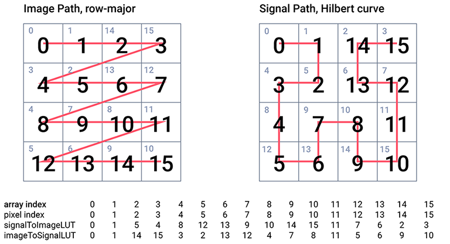
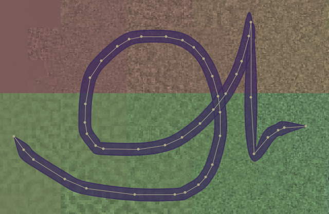

PixelAudio Library for Processing
- maps audio signals to bitmaps,
- transcodes audio to images and images to audio
- captures and edits drawing gestures
- turns gestures into interactive brushstrokes to generate multimedia events,
- provides code-driven instruments for sampler and granular synthesis.
You can turn a 2D image into an audio signal or turn a 1D signal (including live or recorded audio) into a 2D image. You can draw a brushstroke on the display image, which may be a visualization of an audio signal, and record its timing information. When you have loaded an audio file, you can click on the curve to replay the recorded gesture with animation while triggering the audio sampler or granular synthesis engine. Access to the audio file is non-linear, determined by the captured gesture and the mapping between the signal and the image. You can create presets for drawing and audio synthesis and cue them in live performance.
PixelAudio began as a color organ, where sine waves mapped to a Hilbert curve determined the pixel values (RGB colors) in a bitmap traversed by the curve. It later added gesture capture, sampling and granular synthesis audio instruments. To support live performance, it added file i/o for curves, timing information, and audio configuration. The color organ morphed into the WaveSynth class and its supporting classes, with its own file i/o features. Two sketches, Bagatelle and PerformanceModel, support presets for drawing and audio synthesis and can cue them in live performance.
- Video of PixelAudio features: PixelAudio Demo.
- Videos created with PixelAudio: PixelAudio Showcase.
- An intermedia work created with PixelAudio's WaveSynth and Argosy algorithms: Campos | Temporales.
See the GitHub repository for more information, instructions on installation, and the most current release. Check out the example code for more information on how to use PixelAudio. The most recent JavaDocs can be found at on my website. PixelAudio is a toolkit rather than a performance application, so I hope that people will play with it and create capabilities that go far beyond the sample code that I have provided. If you just want to use a PixelAudio sketch as a performance instrument, PerformanceModel is practically plug-and-play: just supply your own audio files (though rolling your own presets will give you many more possibilities).
Installing and Running PixelAudio
To start with, you'll need to have Processing installed and configured. If this is all new to you, go to the Download webpage for Processing and install it. Then check out the Environment documentation with particular attention to setting the location of your Sketchbook folder. The path to the Sketchbook folder is typically something like "/Users/your_home_directory/Documents/Processing/". Once you have the path configured, navigate to the Sketchbook folder. It contains a number of folders, including one called "libraries."
To install PixelAudio, go to the Releases page and download the latest version of PixelAudio. Extract the files from the downloaded archive. You should end up with one folder, "PixelAudio". Move it into the "libraries" folder in your Sketchbook folder. That's all you need to do to install the PixelAudio library, or any other Processing library.
Some PixelAudio classes use the Minim audio library.
PixelAudio has no other dependencies, but to run the examples that
come with it you will need to install some additional libraries.
You can install them with the Processing
Sketch->Import Library...->Manage Libraries...
menu command, which opens the Contribution Manager dialog.
In addition to Minim, other libraries used in the
examples are Video Export, by Abe Pazos,
oscP5, by Andreas Schlegel, and the
G4P library, by Peter Lager.
I also recommend you install the Sound library
and Video Library for Processing 4,
both from the Processing Foundation.
How PixelAudio Works
The two core concepts in PixelAudio are lookup table (LUT) mapping and gesture capture. LUT mapping is the core functionality that joins audio and image data, while gesture capture is a core functionality for user interaction and audio synthesis. Gestures are represented on screen as brushstrokes. The geometric points determined by a brushstroke map to indices in the corresponding audio signal. Activating a brushstroke triggers the playback of the audio sample with the sampling or granular synthesis engines.
Lookup Table (LUT) Mapping
In PixelAudio classes, 1D signals and 2D bitmaps are related to each other
through lookup tables (LUTs) that map locations in the signal and bitmap arrays
onto one another. You could think of the signal tracing a path (the signal
path) over the bitmap, visiting every pixel. The image also has a path, but
it is fixed: left to right, top to bottom. The signal path may be continuous,
stepping from pixel to connected pixel, in which case it is a Hamiltonian Path
over a 4-connected or 8-connected grid, the bitmap. It may even be a loop, where
the last pixel connects to the first, but it may also skip around, as long as it
visits every pixel exactly once. The signalToImageLUT in
PixelAudioMapper lists the position index in the bitmap of each
pixel the signal visits. Similarly, the imageToSignalLUT tells you
what position in the signal corresponds to a particular pixel. This makes it
easy to click on the bitmap and play an audio sample corresponding exactly to
the location you clicked, or to transcode an audio signal into RGB pixel values
and display them in a bitmap.

The PixelAudioMapper class
and the
PixelMapGen class and its
subclasses provide the core functionality of the library and are abundantly commented.
PixelMapGen provides a lightweight framework for creating mappings between audio
sample and pixel data arrays. A PixelMapGen
subclass ("gen" for short) generates the (x,y) coordinates of the signal path over the image,
and creates the LUTs from the coordinates. PixelMapGen subclasses plug in to
PixelAudioMapper, which can transcode pixel and audio data and write it to pixel or
audio sample arrays while remaining independent of the actual audio and image formats. The one
restriction (at the moment) is that color is encoded in RGB or RGBA format and audio is encoded
as 16-bit floating point values over the interval (-1.0, 1.0). Audio values can exceed these
limits in calculations, but should be normalized to the interval for playing audio or saving to
file. PixelAudioMapper includes a trove of methods for color space operations,
array shifting, LUT mapping, and transcoding. While it should be relatively easy to write your
own PixelMapGen child class (you only need a list of coordinates for the signal
map), there are many built-in child classes that can get you up and running.
Gesture Capture

If LUT mapping is the core functionality that joins audio and image data, gesture capture is the core
functionality for user interaction. A Gesture combines location and timing information. The
curves package provides a
framework for gesture geometry and representation. The
schedule
package handles timing. For a formal definition of a gesture, see the Javadoc for the
PAGesture class.
Interaction
Gestures are represented as brushstrokes, the UI element that provides interaction with the underlying
audio file. The GUI examples
GesturePlayground and
Bagatelle provide tools to edit brushstrokes
and determine their interactions with audio synthesis engines for traditional sampling synthesis and
granular synthesis.
Audio Synthesis
PixelAudio provides two types of audio synthesis: traditional sampling synthesis with ADSR-style envelopes and granular synthesis with windowed granular samples. A mouse click typically triggers a single sample or granular burst. A brushstroke triggers multiple samples or grains. The points in the brushstroke access the audio file indices in non-linear order. The two synthesis engines and their supporting methods provide polyphonic instruments with a number of advanced features for real-time performance.
Other Features
Other core classes include the WaveSynth class, which uses
WaveData objects for additive audio synthesis to create both a
playable audio signal and an animated image that are generated in parallel.
Some of the coding examples show how you can read and write JSON files of
WaveSynth configurations. The Argosy and
Lindenmayer classes provide pattern-generation tools that can
be used to create visual or audible rhythms, textures, and signals.
An OpenSimplex implementation, ScaledSimplex, provides
scaled random noise.
The library includes packages and classes for:
- Curve-modeling
- Gesture capture and transformation
- Sampler-based audio synthesis
- Polyphonic sampler instruments with ADSR envelopes
- Granular synthesis
- Polyphonic granular instruments
- Event scheduling
- File IO for curve and gesture data and audio synthesis settings
- Windowed audio file traversal
Examples
Example sketches in Processing and Java provide a survey of PixelAudio features, particularly for:
- mapping audio signals and bitmaps
- drawing curves and capturing gestures
- mixing color channels and audio samples
- playing audio samples interactively
- capturing live audio
- adjusting and saving audio synthesis settings
- communication with external applications via UDP
Some sketches include graphical user interfaces and can be used directly in live performance. See the Examples README for descriptions of each example.